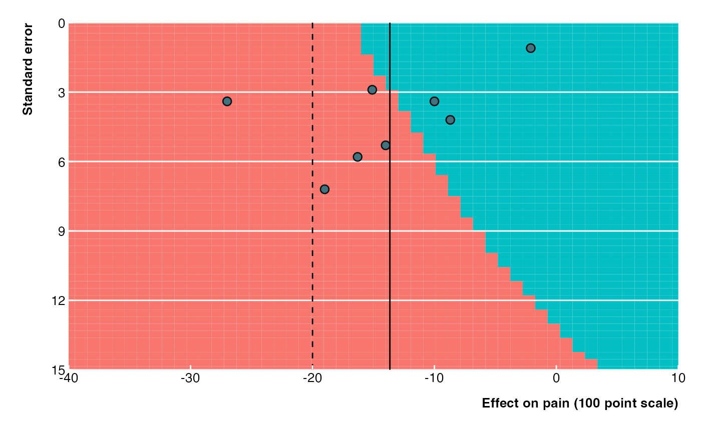
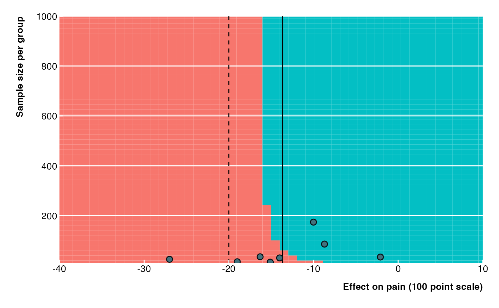
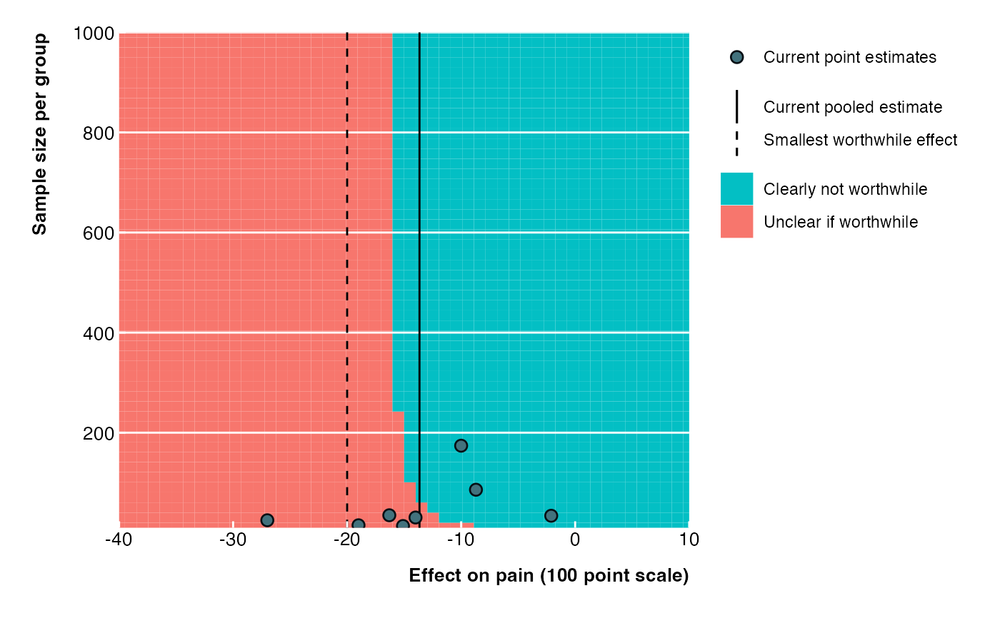

Create Extended Funnel Plots
extfunnel2.RdInspired by the archived extfunnel package by Langan et al. The function creates an extended funnel plot with shaded contours that show the impact of a new study with a certain effect estimate and standard error (or sample size) on the conclusions of an updated meta-analysis. Uses ggplot2 instead of base R, allows specification of the meta-analytic model as well as simulation using sample size per group.
Usage
extfunnel2(
yi,
sei,
sd = NULL,
n = NULL,
swe,
method = "REML",
test = "z",
contour_points = 50,
x_lim,
y_lim,
x_lab = "Effect size",
y_lab = "Standard error",
x_ticks = NULL,
y_ticks = NULL,
legend_pos = "right",
legend_just = NULL,
exp = FALSE
)Arguments
- yi
A numeric vector with effect estimates for each study. Odds/ risk ratios should be log-transformed.
- sei
A numeric vector with standard errors for each study. Must be specified. If 'sd' and 'n' are not specified the y-axis will correspond to the standard error.
- sd
A single numeric value corresponding to the assumed standard deviation per group of a future study. If 'sd' and 'n' are specified the y-axis will correspond to the sample size per group. Only works for mean differences.
- n
A numeric vector of the average sample size per group for each study. Only needed when 'sd' is specified.
- swe
A single numeric value corresponding to the smallest worthwhile effect. Odds/ risk ratios should be log-transformed.
- method
A character string indicating which method should be used to estimate tau. Default is "REML". See rma of the metafor package for more options.
- test
A character string indicating which method should be use to calculate confidence intervals. Default is "z". rma of the metafor package for more options.
- contour_points
A numeric value indicating the number of contour points to be used for simulation. Default is 50. For high quality contours 500 is recommend. This takes a long time as 250.000 (500x500) meta-analyses will run (one contour point equates to one meta-analysis).
- x_lim
A numeric vector with two values indicating the lower and upper limits of the simulated effect estimates (corresponds to x-axis limits). Odds/ risk ratios should be log-transformed.
- y_lim
A numeric vector with two values indicating the lower and upper limits of the simulated standard errors (corresponds to y-axis limits). If 'sd' and 'n' are provided 'y_lim' corresponds to lower and upper limits of the sample size per group.
- x_lab
A character string indicating the x-axis label for the plot. Default is "Effect size".
- y_lab
A character string indicating the y-axis label for the plot. Default is "Standard error".
- x_ticks
A numeric vector indicating the tick marks for the x-axis. Default is NULL. Odds/ risk ratios should be log-transformed.
- y_ticks
A numeric vector indicating the tick marks for the y-axis. Default is NULL.
- legend_pos
A character string indicating the position of the legend in the plot. Default is "right". Can be "top", "right", "bottom", or "left".
- legend_just
A character string indicating the legend justification in relation to the 'legend_pos' argument. Default is NULL. I.e. if 'legend_pos' is "right" and 'legend_just' top, the legend will appear at the top right corner of the plot.
- exp
A logical value indicating whether the x-axis should be on a logarithmic scale (in case odds/ risk ratios are provided). Default is FALSE.
Value
An extended funnel plot (ggplot2 object) with shaded contours that show the impact of a new study with a certain effect estimate and standard error (or sample size) on the conclusions of an updated meta-analysis.
References
extfunnel package
https://cran.r-project.org/package=extfunnel
Langan D, Higgins JPT, Gregory W, et al. Graphical augmentations to the funnel plot assess the impact of additional evidence on a meta-analysis. J Clin Epidemiol 2012;65:511–9.
https://doi.org/10.1016/j.jclinepi.2011.10.009
Ferreira ML, Herbert RD, Crowther MJ, et al. When is a further clinical trial justified? BMJ 2012;345:e5913.
https://doi.org/10.1136/bmj.e5913
Author
Florian Teichert teichert.florian@gmail.com
ORCID 0000-0003-2211-797
Examples
# Load package once installed
library(extfunnel2)
# Reproducing the extended funnel plot from Ferreira et al. 2012
# Random effects meta-analysis (effect of exercise on chronic low back pain)
data <- data.frame(yi = c(-10.0, -16.3, -27.0, -14.0, -15.1, -2.1, -19.0, -8.7),
sei = c(3.4, 5.8, 3.4, 5.3, 2.9, 1.1, 7.2, 4.2),
ni = c(174.0, 35.0, 25.0, 30.5, 13.5, 34.0, 15.0, 86.0))
# Create extended funnel plot
# Standard error on y-axis
extfunnel2(data$yi, data$sei,
swe = -20,
method = "DL",
contour_points = 50,
x_lim = c(-40, 10), y_lim = c(0, 15),
x_ticks = seq(from = -40, to = 10, by = 10),
y_ticks = seq(from = 0, to = 15, by = 3),
x_lab = "Effect on pain (100 point scale)",
legend_pos = "none"
)

# Sample size per group on y-axis
# Assumptions: Equal group sizes and fixed SD
extfunnel2(data$yi, data$sei,
sd = 15, n = data$ni,
swe = -20,
method = "DL",
contour_points = 50,
x_lim = c(-40, 10), y_lim = c(10, 1000),
x_ticks = seq(from = -40, to = 10, by = 10),
y_ticks = seq(from = 0, to = 1000, by = 200),
x_lab = "Effect on pain (100 point scale)",
y_lab = "Sample size per group",
legend_pos = "none"
)

# With legend
extfunnel2(data$yi, data$sei,
sd = 15, n = data$ni,
swe = -20,
method = "DL",
contour_points = 50,
x_lim = c(-40, 10), y_lim = c(10, 1000),
x_ticks = seq(from = -40, to = 10, by = 10),
y_ticks = seq(from = 0, to = 1000, by = 200),
x_lab = "Effect on pain (100 point scale)",
y_lab = "Sample size per group",
legend_just = "top"
)
